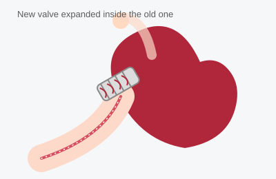

Procedures
Here is an overview of the cardiac tests and procedures we perform or refer for, including what to expect, roughly how long each one takes, whether fasting is required, and what recovery is like. These pages are general information — your doctor will go over the specifics that apply to you.
-
 Echocardiogram
Echocardiogram
An ultrasound of the heart that shows its structure and pumping function. -
 Treadmill Stress Test
Treadmill Stress Test
Walking on a treadmill while your heart rhythm and blood pressure are monitored. -
 Nuclear Stress Test
Nuclear Stress Test
Imaging that shows blood flow to the heart muscle at rest and with stress. -
 Cardiac Catheterization
Cardiac Catheterization
A catheter test that directly images the heart's arteries. -
 Peripheral Angiogram
Peripheral Angiogram
An angiogram of the leg (or other) arteries to find narrowing or blockage. -
 Implantable Loop Recorder
Implantable Loop Recorder
A tiny device placed under the skin to continuously record your heart rhythm. -

TAVR (Transcatheter Aortic Valve Replacement)
A catheter-based way to replace a narrowed aortic valve without open-heart surgery.
This information is for education only and does not replace advice from your doctor. If you have questions about a procedure you are scheduled for, please contact the office.